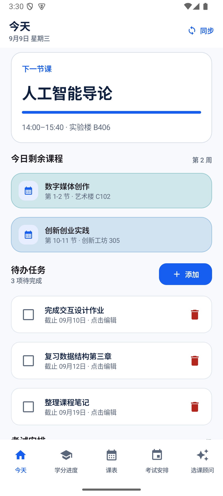
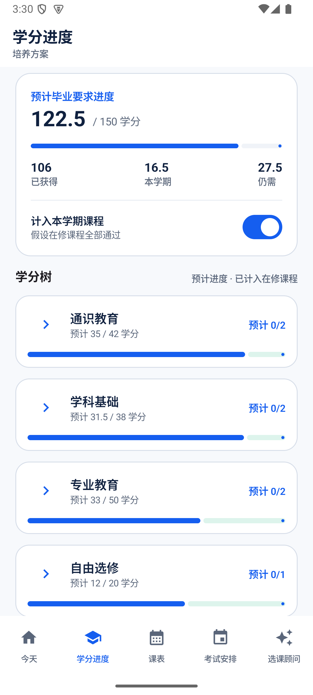
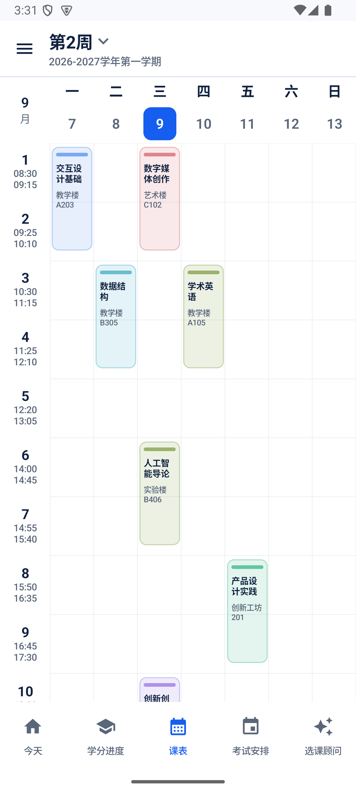
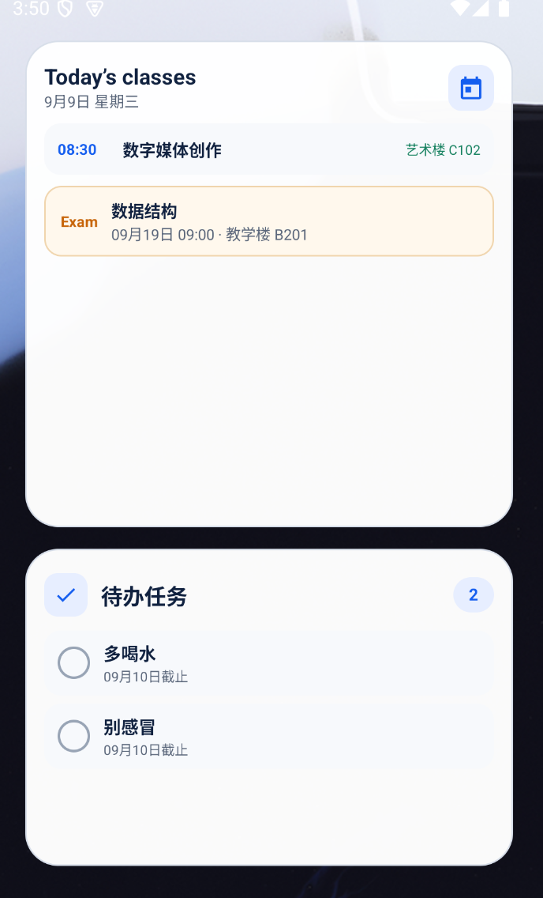

Today今天
See the class running now, what is left today, tasks, and exam status at a glance.一眼查看正在上的课、今日剩余课程、待办与考试状态。
Keep classes, credits, tasks, and exams together. Local-first storage keeps your academic data on your device. 把课程、学分、待办与考试放在一起。本地优先存储，让学业数据留在你的设备上。
Currently compatible with Jinan University's undergraduate academic system. 目前适配暨南大学本科教务系统。
Android 8.0+ · Free and open source Android 8.0+ · 免费开源
Real Keshu screens running with fictional demonstration data.以下界面均由课枢实际运行生成，内容为虚构演示数据。




A focused view of what matters now, with the detail available when you need it.先看到当下最重要的事，需要时再深入查看细节。
See the class running now, what is left today, tasks, and exam status at a glance.一眼查看正在上的课、今日剩余课程、待办与考试状态。
Swipe between teaching weeks with holidays and make-up days marked, and use campus presets or custom class times.滑动切换教学周，自动标注放假与调休，并可选择校区预设或自定义上课时间。
Compare completed and in-progress credits with curriculum requirements.对照培养方案查看已修、在修和毕业要求学分。
Keep arrangements visible and see the official viewing window when results are closed.集中查看考试安排；未开放查询时显示学校公布的查看时间。
Track study tasks and enable local reminders only when you want them.管理学习待办，并只在需要时开启本地提醒。
Keep today's schedule, exam status, and tasks on your home screen.把今日课表、考试状态与待办留在桌面上。
Imported records, tasks, and settings are stored locally. Portal sign-in happens on the university's own page, and Keshu does not store your portal password. Keshu checks GitHub for updates at most once every three days when opened.导入记录、待办和设置均保存在本地。教务登录在学校自己的页面完成，课枢不会保存教务密码。课枢启动时最多每三天访问一次 GitHub 检查更新。
Read the privacy overview阅读隐私说明Keshu is available under GPL-3.0-only. Read the code, suggest improvements, or adapt a data-source integration.课枢采用 GPL-3.0-only。你可以阅读源码、提出改进，或适配新的教务数据源。
Explore the repository浏览项目仓库Download Keshu v0.4.3 Preview for Android 8.0 or later.下载适用于 Android 8.0 及以上版本的课枢 v0.4.3 预览版。